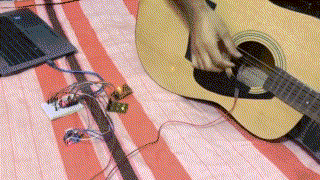

Projects
Power Electronics
- Wireless Charging Electric Vehicle (Aug 2022 - Nov 2023) Students from the Department of Electrical and Electronics Engineering (EEE) at Shahjalal University of Science and Technology (SUST) have recently developed a prototype of a light-duty electric vehicle that is capable of being charged wirelessly. The experimental prototype of the vehicle was created in the university's power electronics lab by the student-led Power Electronics team. Learn More
- PSystem Library (Oct 2023) A C++ library for determining power system properties (i.e., Z-bus, Y-bus, Load flow) Learn More
Signals and Systems
- Wireless Communication System over N-Byte AES Encrypted Channel (Aug 2022 - Jan 2023) Traditional walkie-talkie broadcasts voice signal over a carrier signal. As the voice signal is directly transmitted and can easily be heard through any demodulator, it is impossible to use it in one-to-one communications. If we convert this analog voice signal into digital signal and encrypt it with common shared key, it is possible to save transmitted data from anyone in-between.
- Guitar Tuner Device using Arduino (Jun 2022)

To tune a guitar, each string had to be played one by one and the signal it creates was compared with the ideal signal of that string and adjust accordingly. The goal of the project is to detect which string is playing by capturing the signal by a regular microphone and suggest user to tighten or loosen the string using LED indicators. Learn More
Games
- Toon Got Speed (TGS) (Dec 2020) TGS is a simple web game made for fun. Play